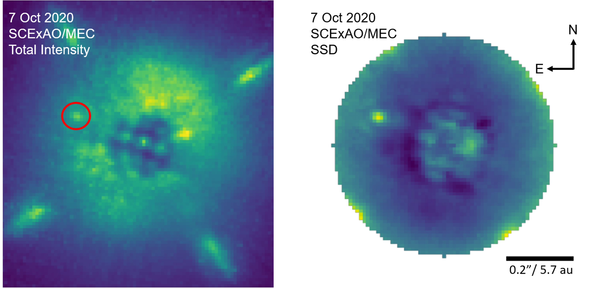

About Me

Education:
2017 B.S. Physics, Boston College
2023 Ph.D. Physics (Astrophysics emphasis), University of Califronia, Santa Barbara
Research Interests: High-contrast imaging, Superconducting detectors, Exoplanets, Instrumentation, Coronography
Publications: ADS Library
Research

Superconducting energy-resolving deectors for HWO

Ph.D. Thesis: High-contrast Imaging with the MKID Exoplanet Camera (MEC)
Thesis Link
My thesis work focused on the Microwave Kinetic Inductance Detector (MKID) Exoplanet Camera (MEC) which
is a Y-J band integral
field unit located behind the Subaru Coronagraphic Extreme Adaptive Optics system (SCExAO) at the Subaru
Telescope on Maunakea. The detector inside of MEC is a 20 kilo-pixel photon-counting MKID array that yields
not only the energy of each photon ($\mathcal{R}\sim$5), but also its arrival time (to within a microsecond)
with no read noise or dark current. This temporal resolution allows us to perform post-processing techniques
that leverage differences in the photon arrival time statistics between stars and their faint companions such
as Stochastic Speckle Discrimination (SSD). With SSD, we have demonstrated the ability to uncover low mass stellar
companions with the discovery of HIP 109427 B and also obtained the first SSD detection of a diffuse source using MEC
observations of the known disk AB Aurigae. Here we can resolve structures in the disk within 0.3” without the use of
any PSF subtraction or polarization. These analyses are made possible through the use of the MKID Pipeline,
a new open-source data reduction and analysis pipeline developed for MKID instruments that takes raw MKID data
as its input and can return not only unique MKID data products for specialized analysis, but also images that
can easily interface with existing post-processing techniques (e.g. ADI) for more general science.
Contact
Email: ssteiger@stsci.edu